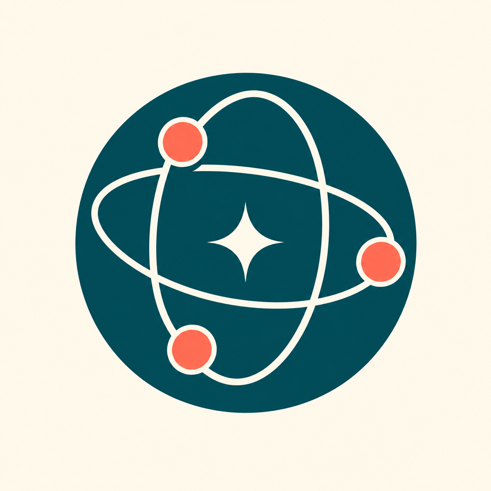

01 / Create
Comfy Story Planner
Plan shots that stay coherent.
- Exact shot and dialogue timing
- Explicit character and object continuity
- Candidate prompts and SRT export
From open-source projects to useful conversations
Three independent plugins for planning films, studying agents, and inspecting policies. Real tools, readable evidence, and the source behind every result.
Separate installs · Free, open source · Directory publication pending
The first collection
Each plugin pairs instructions with executable code extracted or derived from an existing project. Choose the one that fits your next task.
01 / Create
Plan shots that stay coherent.

02 / Experiment
Run reproducible agent trials.
03 / Inspect
Check agent policy structure.
A closer look
Explore the boundaries as well as the happy path.
A three-shot film needs more than three prompts. Each shot must start from a state the previous shots established.
Mira holds the key.
Jo receives the key
Jo uses the key to open the gate.
Plan passes: ownership changes from Mira to Jo before the gate is opened. Three shots total exactly 12 seconds.
Interactive explanation of the tested continuity case. Full validation runs in the Python plugin. Download the actual plan ↗
Recorded output from the packaged WorldZero kernel: seed 17, two policies, 20 decisions each. Both traces were replayed successfully.
| Policy | Decisions | Energy | Outcome | Replay |
|---|---|---|---|---|
| forager | 20 | 22.524 | censored | Verified |
| experimenter | 20 | 15.128 | censored | Verified |
Both episodes reached the decision budget. A censored run does not establish completed survival, causal discovery or model quality.
This is recorded evidence, not a live browser simulation. Inspect output and trace digests ↗
"guards": [{
"id": "tools.allowlist",
"target": "tool_calls",
"with": { "allowed_tools": ["read_story", "plan_shots"] }
}],
"compose": { "root": "tools_allowlist" }The complete bundled example passes schema and static composition checks. A misspelled “allowed_toolz” parameter is rejected. A fail-open setting produces a warning.
The lint tool does not intercept requests or verify runtime behavior. Explore the policy workflow ↗
Bring your own question
The result should be something you can read, rerun, and improve.
Part of a larger body of work
The collection grew from a review of 51 repositories. Read the public project triage and the reasoning behind this first batch.